Lynn Z
Work
Resume
Etc.
About
MOOS
Service Design for Discarded Masks
Individual Project
User Experience & Service Design
2021.05 — Ongoing


Project Brief

Duration
Discipline
May 2021 — Ongoing
UX Design, Service Design, Sustainability
Overview
Problem
Goals
MOOS was conceived in 2021 during the prevalence of the Covid19 outbreak. The demand for masks has soared, but the disposal of discarded masks has not captured the attention and follow-up. This project stimulates public awareness of sustainability through the offline mask processing devices integrated with an online app that discloses the process and creates incentives fitting the Hook Model. In Phase II, NFT is introduced to engage and motivate users.
Through the research, I identified the problems of non-transparent processes, unclear guidance, and uninspired public awareness. The mask recycling popularization is not in place. There is no public participation in the mask recycling system.
Foster public awareness of sustainability by nurturing the habit of mask recycling
Improve existing mask-related recycling systems, increase public participation and retention rates, and make guidelines clearer
Process
DISCOVER
DESIGN
DELIVER
KICK-OFF
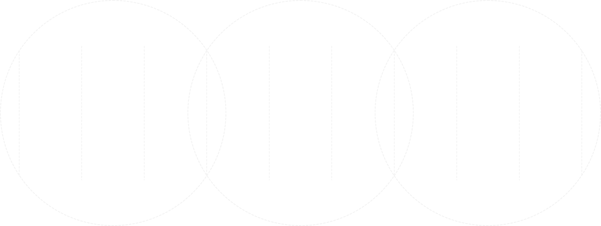
Start Point
 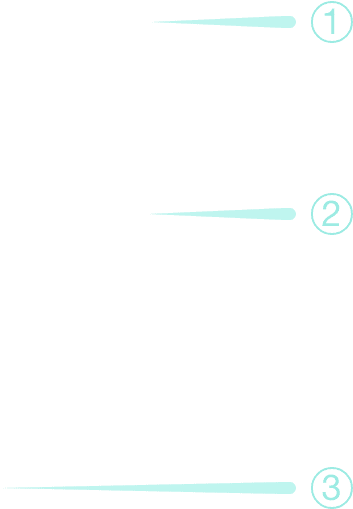
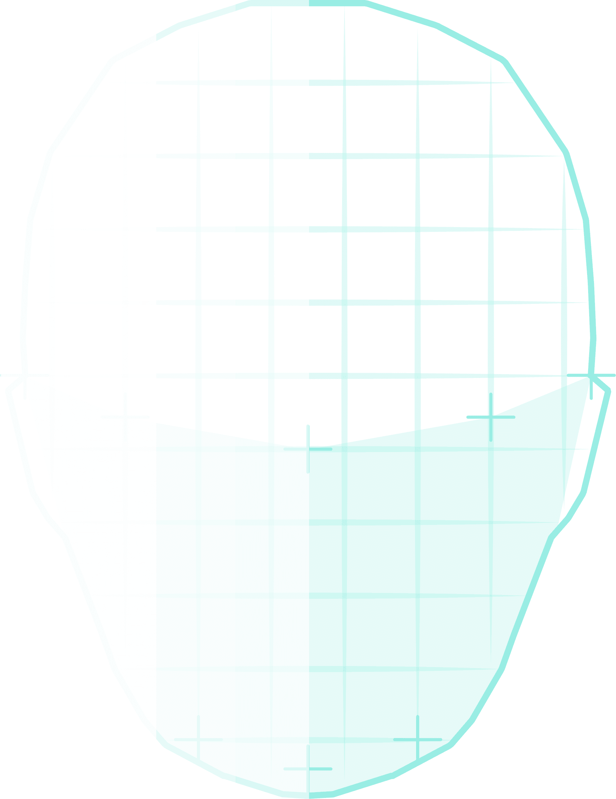
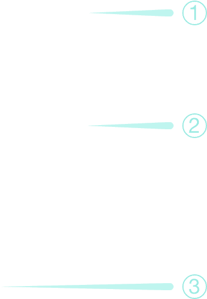
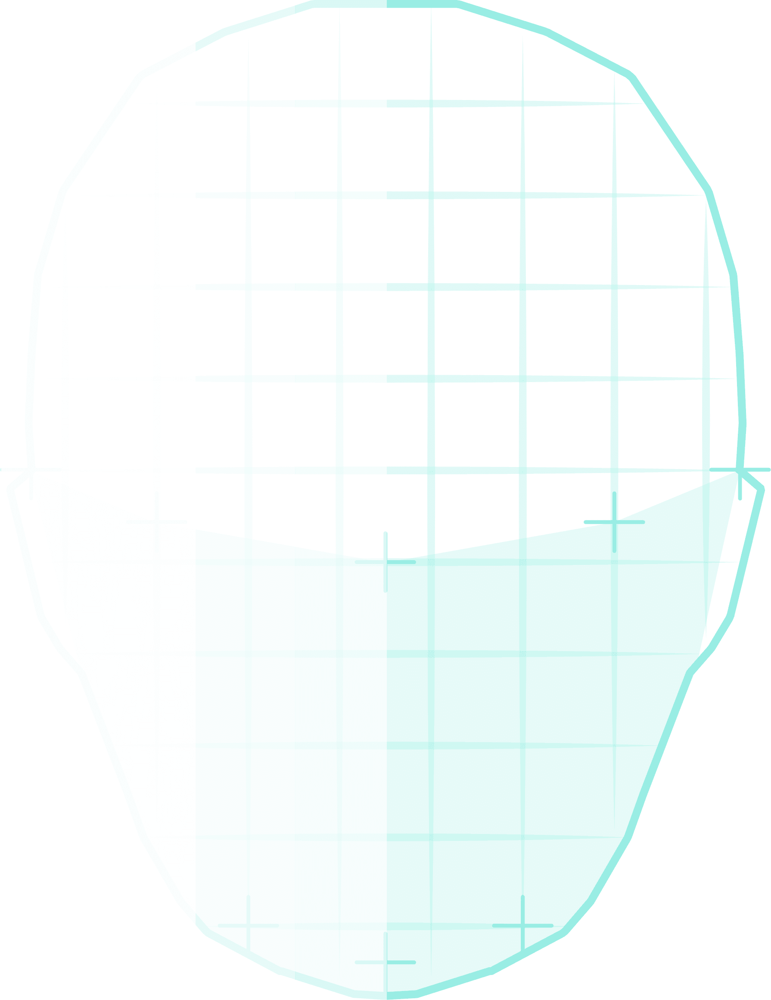
External Pollution Prevention
Privacy Protection
Social Stress Blocker
Medical Use
Changes in
the Role of Mask
Composition & Characteristics
GROWING PUBLIC CONCERN ABOUT MASKS
Masks were originally used to protect objects from contamination. As they became more widely used, they began to be used to protect users from the outside environment.
The COVID-19 outbreak has put masks in the spotlight. How- ever, the increasingly common use of masks is transforming into an environmental pollution problem. How to dispose of discarded masks is an urgent issue.
NON-WOVEN FABRICS
HIGH DENSITY FILTER LAYER
DIRECT CONTACT SKIN LAYER
The textile layer is made of fibers, characterized by foam resistance, good aeration, and lightness.
polypropylene
that captures dust, filters, and prevents germs up to 99.999%. It is the principle of isolation of germs.The textile layer is made of fibers, characterized by water absorption and air permeability.
Desktop Research - Mask Disposal in China
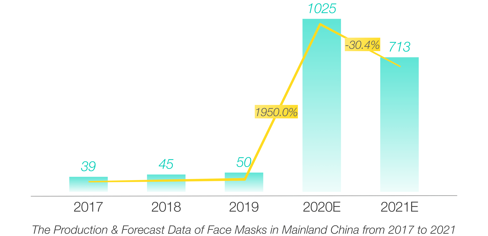 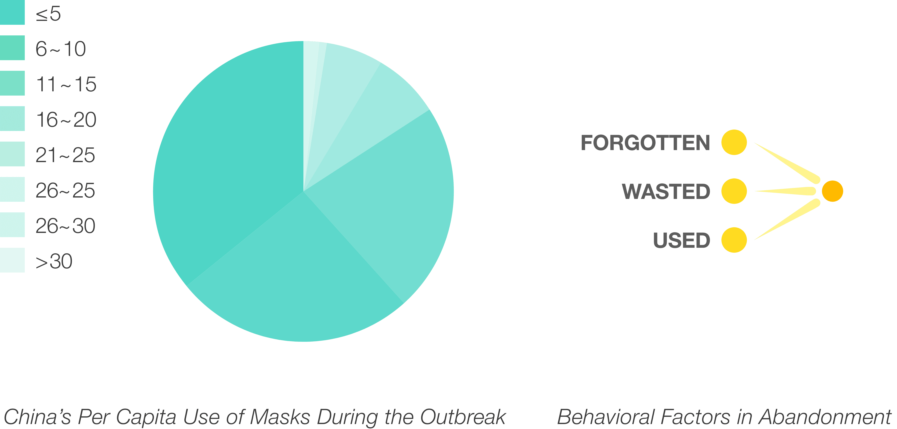 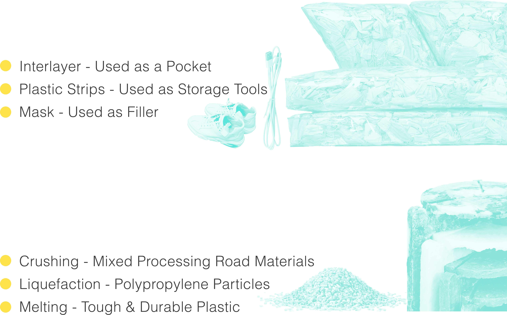
Reuse
The physical form of the mask is retained.
Mask is processed into new material by means of crushing, liquefaction and melting.
Recycle
INDUSTRY
INDIVIDUAL
TRADITIONAL & CURRENT TREATMENT
CIRCULAR ECONOMY WAY
China is the largest producer and exporter of masks, accounting for 50% of the global annual production.
The existing disposal of waste masks has the following steps.
The daily use of masks per person has increased significantly due to the medical needs of COVID-19.
from
?to
?Desktop Research - Mask Pollution
At least 1.56 billion masks ended up in the ocean in 2020, according to OceansAsia.
Polypropylene, used in masks, takes over 400 years to naturally degrade or hydrolyze.
Field Research
Public Transport
Catering Service
Garbage Sorting
The Shanghai government has enforced a policy of wearing masks on public transport, which involves 10.1 million passengers a day on 18 metro lines.
Service workers, who make up 70% of Shanghai's workforce, are required to wear masks, especially catering servers.
Shanghai was the first city in China to implement a garbage sorting policy, with each residential area having a garbage sorting station, which is managed with the help of the neighborhood committee.
I chose Shanghai as the city to be focused on due to the following aspects.
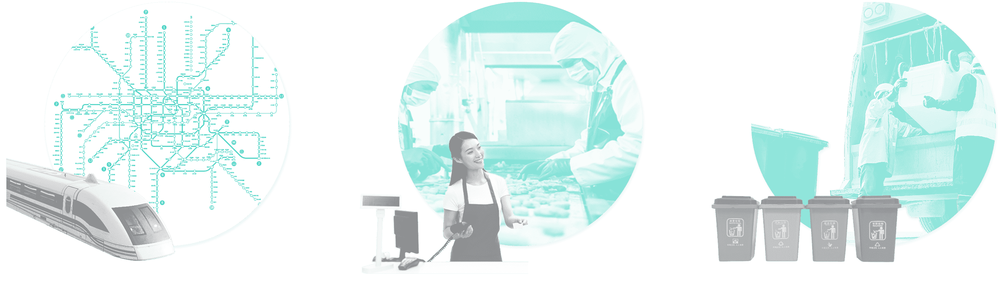Persona-Based Journey Map
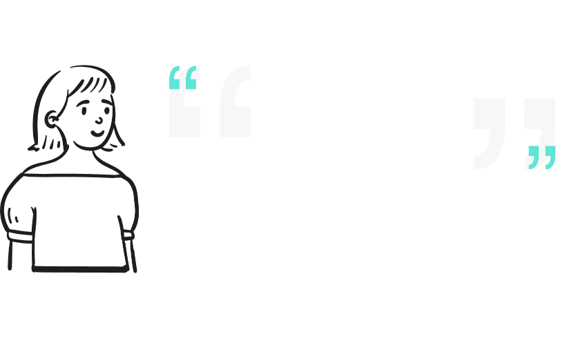 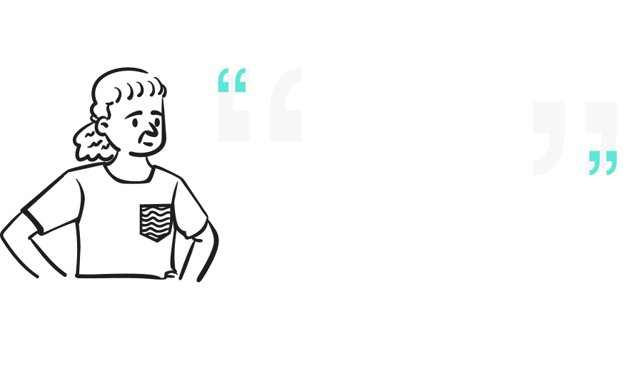 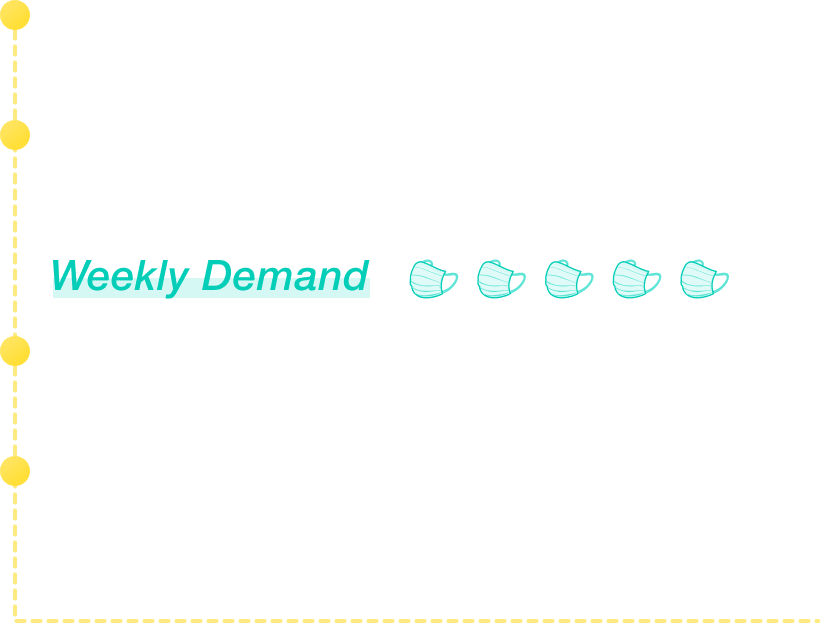 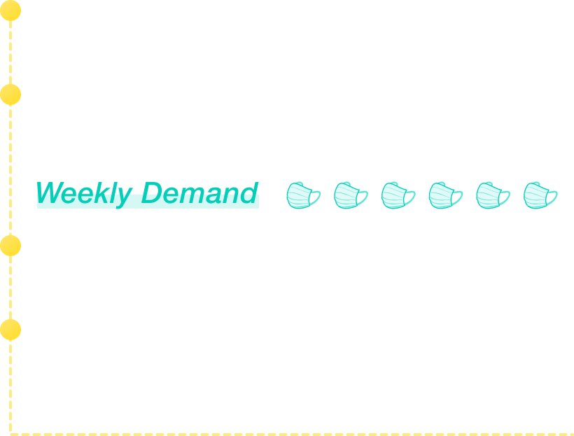 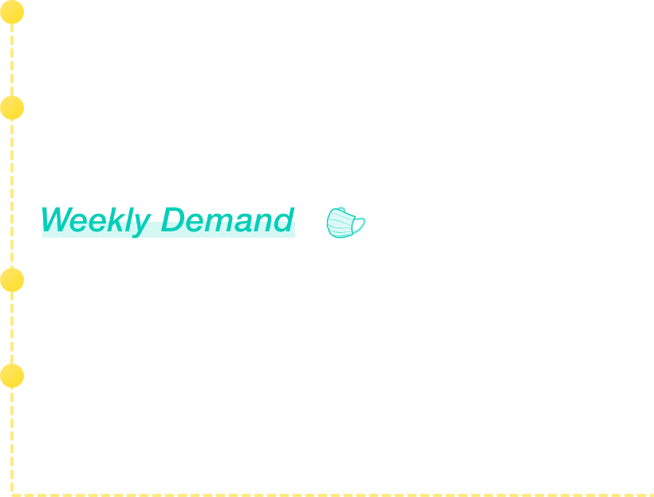 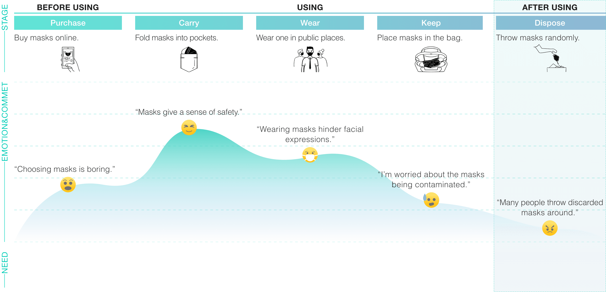A specific platform for buying masks needs to be created, ideally with comparisons and instructions for mask selection.
Tips about carrying the mask need to be promoted, such as whether folding it into pockets is clean.
The social interaction blocked by the masks needs to be fixed.
Cross-infection knowledge ab- out worn masks needs to be widespread.
The sorting of masks needs to be emphasized and promoted.
He buys online and stores masks for 2-3 months.
He only wears a mask when he commutes to work and uses the same one day and night.
He just puts it in the bag.
He doesn't pay attention to it and throws masks in the trash bins at the subway station.
Her masks are distributed by her company.
She is required to wear a mask during work time for about 8 hours a day.
She has a unique pocket for masks to store.
She takes the masks home and drops them off at a nearby recycling site.
She doesn't buy her masks, but her children do.
She usually doesn't wear a mask, and even when she does, she wears it repeatedly.
She puts it in her pants pocket.
She knows the sorting of trash, but she can't tell if masks are medical waste or not.
Purchase Habit
User Habit
Keep Habit
Dispose Habit
Purchase Habit
User Habit
Keep Habit
Dispose Habit
Purchase Habit
User Habit
Keep Habit
Dispose Habit
Jack
Lisa
Chen
It's difficult to communicate on the subway.
I often forget to wear a mask when I go out.
I know all about sorting trash, but I'm not sure about masks.
Questionnaire
I designed an online questionnaire to ask people about the awareness, use, and disposal of masks.
View the entire questionnaire
View raw participant packets
Questionnaire Analysis
Knowledge of Masks
The Most Common Places to Discard Masks
Attitudes to Environmental Activities
Further Research - Mask Recycling System in Shanghai
The present mask recycling system in Shanghai is based on the existing garbage sorting, adding disinfection and sterilization.
Swot Analysis
The availability of sorting bins in public places raises citizens' aware-ness of environmental protection.
Mask recycling knowledge is not widespread, and the style of the garbage cans is not consistent.
The mask recycling system can take reference from the existing waste recycling system.
As the epidemic gets better and the use of masks decreases, the recycling of masks will decrease.
Strengths
Weaknesses
Opportunities
Threats
Insight
Existing and universal disposal systems for discarded masks are defective.
People's habits about discarding masks have also changed considerably.
In Shanghai, there is a generally positive attitude towards environmental activities and regulations.
TO MAXIMIZE UTILIZATION
CHANGE HABITS
ENVIRONMENT WILLINGNESS
How Might We Improve the Mask Recycling Program Based on the Existing System?
Reframed Question
Ideation
LOGICAL MINDMAP
FREQUENCY OF BEHAVIOR
CHINESE SPECIFIC BEHAVIORAL PSYCHOLOGY
WEAKNESSES OF COMPARISON SYSTEMS
If a behavior occurs frequently enough, it becomes habitual.
Public recognition encourages the Chinese to regulate their behavior voluntarily.
Comparative systems have single incentives and little information is available to the public.
Complete Mask Recycling
Get Reward
Long-Term Behavior & Habit Formation
short-term behavior
user goals
design purpose
Information
-mask-related information
Socialization
-ranking & friend recognition
Entity
-coupon
Self
-environment identity
Reference
Wang Can, an expert on the legislation of garbage classification, pointed out that the main reason for the incomplete legislation of garbage classification is the lack of publicity and education.
According to Mao Da, policy advisor of the Zero Waste Alliance, this requires citizens to understand the current situation of garbage collection including the classification, flow, and product.
The conditioned reflexes that arise in the unconscious are stored in the basal ganglia in the form of habits. Habits are developed when the brain does not actively consider what to do next.
Ritual is the core of Confucius' thought, leading to a deep-rooted sense of rules and reinforcing the sense of shame, leading Chinese people to develop good habits.
Reference: < Neurological plasticity & habituation >
Reference: < The Analects of Confucius >
NEUROLOGIC PERSPECTIVE
, HOW AREHABITS FORMED
?CULTURE PERSPECTIVE
, HOW AREHABITS FORMED
?Case Study - Existing Innovative Recycling Systems
Express Carton Recycling
La Bouteille D'eau En Pet
Multi-Dimensional Comparison
Opportunity
Explore Triggers & Rewards
Be Continuously Hooked
Approached Goals
Comparative Analysis
The cartons are recycled after receiving the courier and are disinfected and reused in the courier industry.
PET bottles reduce energy use in industrial recycling by 50% and can be 100% recycled.
Permeate popularization of science and process disclosure in motivation.
Help the public go through a process from awareness of mask disposal to related recycling.
To achieve mask-related sustainability by increasing citizen participation and pop- ularizing the system.
Design Theory of Hook Model
BEHAVIORAL ECONOMICS PERSPECTIVE
, WHAT ARETHE INCENTIVES FOR HABIT FORMATION
?From a comprehensive view of the fields of consumer psychology, human-computer interaction, and behavioral economics, the hook model is a loop process and can be summarized as above.
Reference: < Hooked: How to Build Habit-Forming Products >
LEGEND
Included Content
Element
What gives me an inspiration
Final Concept
Based on psychological incentives, MOOS aims to explore the possibilities of improving people's behavior in discarding disposable masks through the integration of the online app and offline devices.
various rewards
self- processing
disclosed process
unified recovery

System Map
Information Flow
Fund Flow
Material Flow
Legend
Offline Device Design
Sketch
Client & Service
Back End
QR Code Scanner
Feed Inlet
Pulverizer
Debris Bin
Sidewalls
Gravity Sensor
Collect QR codes to get and confirm users' data.
With a certain angle of inlet design, 3~5 masks can be put in each time.
Provide efficient and timely disposal of masks.
Help back-end staff to recycle debris quickly.
Through sidewalls, the public is informed of the amount of mask debris in the bin.
Converts gravity into a signal in the background and displays capacity information.

Mockup
Online App Design
Information Architecture
Based on the information architecture, I designed a low-fi wireframe diagram and conducted user AB tests. The following are the results of the tests with the key task flow.
Visual Identity
Logo
IP Image
Color Palette
Font
M stands for the mask. The name is taken from the crushing sound of the device in operation, and the design is inspired by the conversion from masks to pieces.
Hi-Fi Prototype

User Storyboard
Jack had much confusion about discarded masks.
He saw the ads on social media platforms.
He downloaded moos from the App Store.
He searches for nearby devices and navigates.
He puts masks into the device and gets points.
He redeems points for non-fungible tokens.
Masks are self-processed to avoid illegal flow.
Alarm when the device capacity nears the limit.
Jack monitors the recycling process via the app.
Service Blueprint

Business Canvas
what's Next
Future Prospects
Technical Innovation
Business Strategy
Business Strategy
Innovations in hardware technology, mat- erial adaptation, and incentives will be focused on.
More offline devices will be launched to ensure that they are accessible to users.
Official governments and environmental organizations will be associated to get more authoritative support.
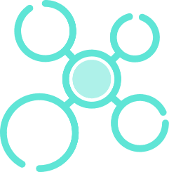Hi there!
Thanks for reaching the end of the page. If you want to learn more about me or what I'm working on, feel free to contact me!
Contact Me
Let's Connect
@ 2022 Lynn Zhang
Phone: Email:
551-689-9116 zhenglin.zhang.lynn@gmail.com


{kind=link}
{kind=link}
{kind=link}